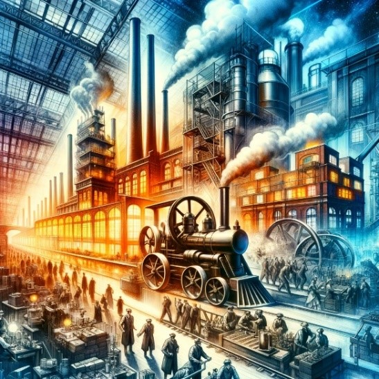

Industrial Revolution Transformations
The term "Industrial Revolution" refers to a series of profound technological and industrial changes

that have significantly transformed economies and societies. As of last update in 2023, there have been
four distinct industrial revolutions:
• First Industrial Revolution (late 18th to early 19th centuries)
• Second Industrial Revolution (late 19th to early 20th centuries)
• Third Industrial Revolution (late 20th century)
• Fourth Industrial Revolution (21st century)